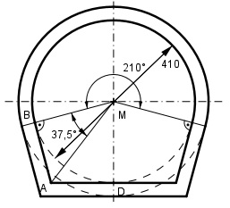

Aufgabe 233 Wie groß ist der Durchflussquerschnitt A des Kanalrohrs?

Die Figur ADMB ist ein Drachen, deswegen ist der Winkel AMB = (210° - 180°) 90° - -------------- 2 = ------------------------- = 37,5° 2 Im rechtwinkligen Dreieck AMB gilt: MB = 410 mm/2 = 205 mm AB tan37,5° = ----- | *MB MB AB = tan37,5° * MB = 0,7673 * 205 mm = 157,3 mm Durchflussquerschnitt A = 210° Bogen + 4 * Dreieck = π * 205² mm² * 210° 157,3 mm*205 mm A = --------------------- + 4*------------------ = 360° 2 A = 76 975,8 mm² + 64 493 mm² = 141 468,8 mm² = = 1 414,7 cm² Wenn jemand eine Lösung dieser Aufgabe ohne Winkelfunktionen kennt, bitte mir zuschicken.